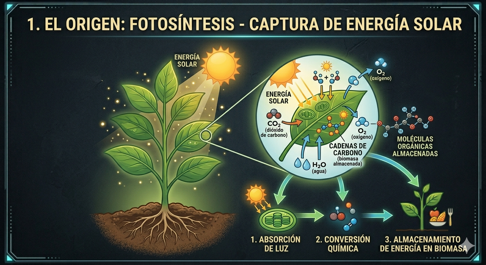
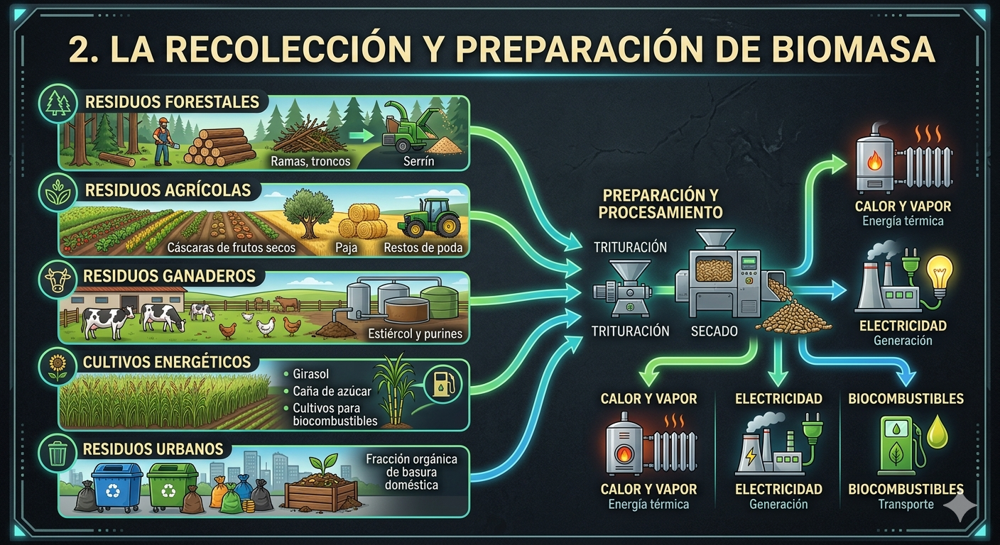
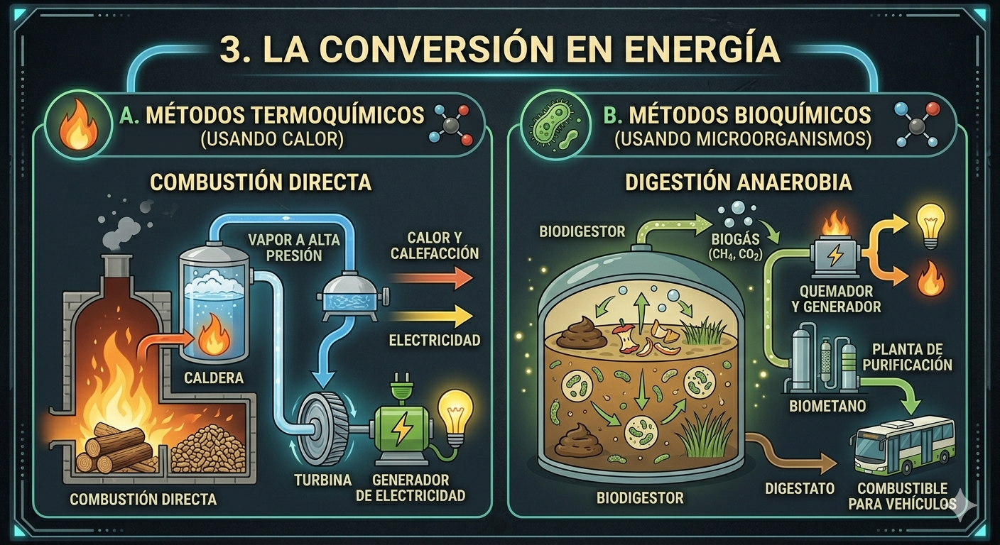
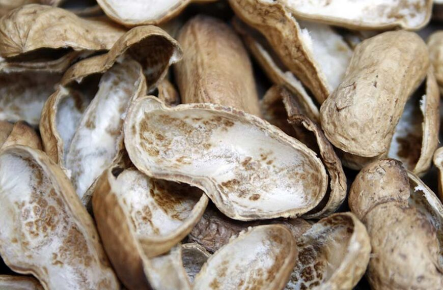

1 - ¿Qué es la biomasa?
Se define como biomasa a toda materia orgánica de origen vegetal o animal, incluyendo los residuos y desechos orgánicos, que puede ser utilizada como fuente de energía.
Proviene indirectamente del sol, ya que las plantas capturan la energía solar mediante la fotosíntesis para sintetizar materia orgánica. A diferencia de los combustibles fósiles, que tardaron millones de años en formarse, la biomasa es una forma de energía renovable de ciclo corto.
💡 Nota: La biomasa se considera "carbono neutral" porque el CO2 que emite al quemarse es el mismo que la planta absorbió durante su crecimiento.
2 - El funcionamiento: La batería química
Para entender la biomasa, debemos verla como un sistema de almacenamiento químico de energía solar. El proceso se divide en tres etapas fundamentales:
La carga (fotosíntesis)
Todo comienza con el sol. Las plantas absorben la luz solar y, mediante la fotosíntesis, combinan agua (H2O) y dióxido de carbono (CO2) de la atmósfera para crear materia orgánica. En este punto, la energía del sol queda atrapada en forma de enlaces químicos dentro de la planta.

El Almacenamiento
Esa energía solar queda "bloqueada" en los enlaces químicos de la materia orgánica (madera, algas, residuos) por tiempo indefinido. La biomasa es, literalmente, un contenedor de energía en espera.

La descarga
Aquí elegimos el camino: si es madera, la quemamos para obtener calor. Si es una papa o residuo húmedo, la fermentamos para extraer gas. En ambos casos, liberamos la energía solar guardada.

¿Cómo "fusiona" la planta estos materiales?
No es una fusión física, sino una síntesis química. La planta utiliza la luz como fuente de energía externa para forzar la unión de átomos de Carbono, Hidrógeno y Oxígeno. Es como si la planta usara electricidad (luz) para armar un juguete de Lego (materia orgánica) muy complejo que, al desarmarse (combustión), devuelve la energía que costó armarlo.
Dato clave: A diferencia de un panel fotovoltaico, la biomasa te permite decidir cuándo usar la energía, tal como lo hace una batería.
3 - Clasificación y procesos: ¿cómo extraemos la energía?
No todos los materiales entregan su energía de la misma forma. La clave está en el contenido de humedad:
Ruta Térmica (Seca)
Para materiales con baja humedad (madera, cáscaras, poda). La energía se libera mediante la combustión.



Ruta Biológica (Húmeda)
Para materiales con mucha agua (estiércol, restos de cocina, papas). La energía se extrae mediante fermentación en biodigestores.
4 - El Biodigestor
Un biodigestor funciona, esencialmente, como un estómago artificial. Es un contenedor hermético donde millones de bacterias trabajan en total ausencia de oxígeno (ambiente anaeróbico) para digerir la materia orgánica que las plantas "armaron" usando la energía del sol.
Proceso de transformación
Residuos orgánicos mezclados con agua.
Bacterias rompiendo enlaces químicos a ~35°C.
Generación de Biogás y bio-fertilizante.
💡 Nota técnica: El biodigestor es un sistema vivo. Para que las bacterias produzcan gas, el pH debe ser neutro y la temperatura constante. Si el sistema "se enferma" (se acidifica o enfría), la producción se detiene.
Los dos tesoros del proceso:
-
🔥
Biogás (metano + CO2)
Gas combustible que se acumula en la parte superior. Se utiliza para cocinar, calentar agua o incluso generar electricidad mediante motores adaptados.
-
🌿
Biol (fertilizante líquido)
El efluente líquido que sale del digestor. Es un fertilizante orgánico extraordinario, ya que el proceso elimina patógenos pero conserva todos los nutrientes (Nitrógeno, Fósforo y Potasio).
¿Biodigestor o Compostera?
BIODIGESTOR
Sin oxígeno (anaeróbico). Produce Biogás para cocinar y fertilizante líquido (Biol).
"Atrapamos el gas para usarlo".
COMPOSTERA
Con oxígeno (aeróbico). Produce Compost sólido para tierra. El gas se escapa a la atmósfera.
"Es un proceso de reciclaje de suelo".
5 - Aplicación profesional y valorización de residuos
Para un técnico, la biomasa no es solo combustible; es una decisión de diseño constructivo y de gestión de recursos que transforma un desecho en un insumo valioso.
🔥 Sistemas centralizados
Las calderas de pellets son automáticas. El desafío en obra es el silo de almacenamiento: se debe prever un espacio seco y accesible para la carga de combustible.
🏗️ Autoconsumo industrial
Muchas industrias (como aserraderos) usan sus propios descartes para generar vapor, eliminando el costo de disposición de residuos y ahorrando energía.
"En la construcción sustentable, el residuo no es un desecho, es energía esperando a ser liberada."
7 - Impacto ambiental y sostenibilidad
Ciclo de carbono cerrado
A diferencia del petróleo, la biomasa devuelve a la atmósfera el CO2 que la planta absorbió recientemente, manteniendo el balance del ecosistema en equilibrio.
Reducción de metano
Capturar residuos evita que se descompongan al aire libre generando metano, un gas de efecto invernadero 25 veces más potente que el CO2.
Libro: energía de la biomasa
Manual técnico completo de la secretaría de energía de la nación.
Repaso Relámpago
1. ¿La biomasa es materia o energía? ▼
2. ¿Tiene una huella de carbono positiva o negativa? ▼
3. ¿Qué diferencia a la biomasa de un panel solar? ▼
4. ¿Puedo usar una piedra como biomasa? ▼
5. ¿Puedo usar una papa como biomasa? ▼
6. ¿Puedo usar madera? ▼
📝 Actividad de clase
1. Análisis de caso
Si en una zona rural no hay red de gas natural pero existe una gran producción porcina, ¿qué tecnología de biomasa recomendarías instalar y por qué?
2. Verdadero o Falso (Rápido)
3. Clasificación de residuos
Escribí "S" para biomasa Seca o "H" para biomasa Húmeda según corresponda: